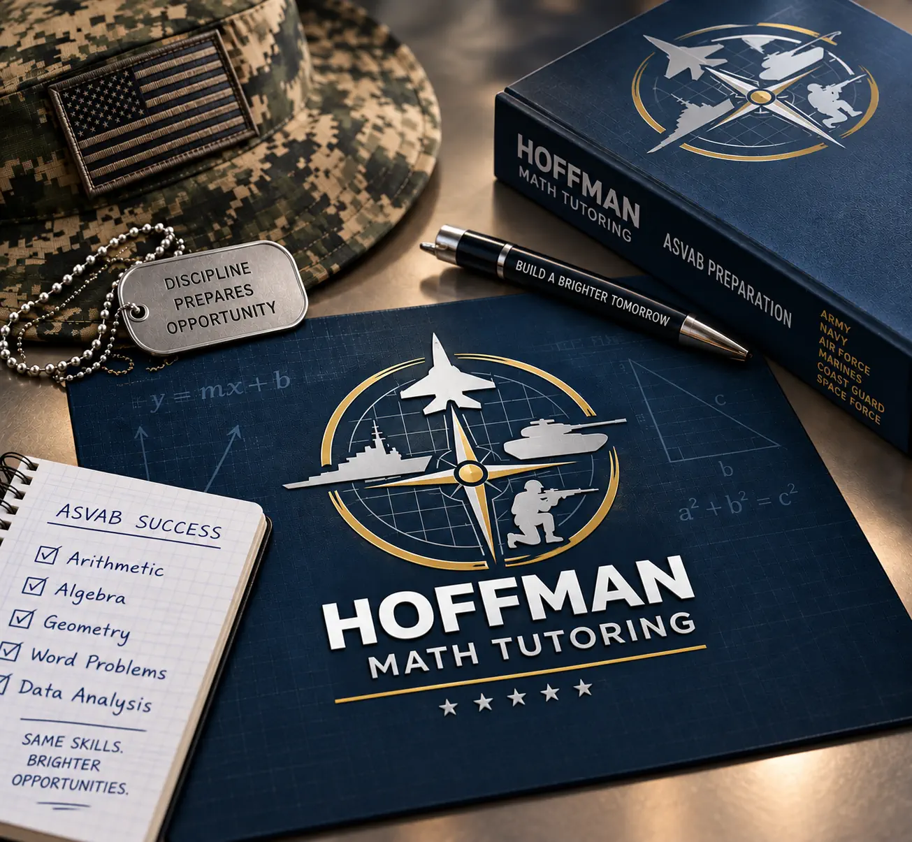

Adult Education | Certified Teacher
My instruction is grounded in over a decade of classroom experience as a certified math teacher. We start by strengthening the core subjects needed to pass the ASVAB using IXL's Independent Learner program for adults. Once that foundation is in place, we move to March 2 Success, where diagnostic testing helps pinpoint remaining weak areas and provides additional learning materials.
From there, we can focus on the specific skills and line scores needed for the military career you want. Realistic practice tests help measure your progress and determine when you're ready to sit for the ASVAB. Throughout the process, tutoring is focused on the areas where you need help—not material you already understand. Payments go through Stripe—clean, simple, done.
Personalized remote tutoring offers targeted prep for the ASVAB, including help with test-taking strategies and essential math—covering everything from basic middle school math up through Algebra and Geometry for the Arithmetic Reasoning and Mathematics Knowledge sections of the ASVAB. Word Knowledge and Paragraph Comprehension are also taught using educational resources that take learners from the ground up to more complex material. Diagnostic assessments pinpoint each student's strong and weak areas so effort goes where it's needed most. Structured support closes learning gaps, reinforces fundamentals, and develops readiness for exam day.
Schedule Lessons →We build the four key areas that determine your AFQT score: Arithmetic Reasoning, Mathematics Knowledge, Word Knowledge, and Paragraph Comprehension.
Targeted practice questions on a platform designed for adult learners, helping you rebuild essential skills and strengthen weak areas at your own pace.
Official diagnostic testing, line score preparation, and practice exams pinpoint individual strengths and weaknesses.
Transparent, straightforward session invoicing via Stripe without third-party platform markups.
Founder & Instructor
I'm Bill Hoffman, the owner and sole instructor at Hoffman Remote Learning. I'm a retired mathematics teacher, Navy veteran, and lifelong troubleshooter who has spent much of my career helping people understand things that at first seemed complicated. Before teaching, I worked in technical fields involving power generation, electronics, industrial controls, and automation. I also worked as an adult trainer, providing customer product training and speaking at conferences around the country. Eventually, I brought that same ability to teach into the classroom, where I taught mathematics from middle school through Precalculus.
Today, I enjoy a quieter life with my wonderful wife and continue doing what I've always enjoyed—helping people obtain their goals. Hoffman Remote Learning is a small, independently owned business. When you schedule a lesson, you're working directly with me, not being assigned to a tutor from a large tutoring company. My approach is simple: find out what you already know, identify what's causing the problem, and work on that. Whether you're just trying to pass the ASVAB or working toward the line score needed for the military job you want, I believe in spending targeted time building on the foundation you already have in place.
Focused Instruction. Real Results.
"Outstanding Math tutor and Mentor." William has been truly wonderful for my son, Lucas. He has not only helped him strengthen his math skills but has also given him more confidence and helped him achieve a high score on his math placement for the IB program.
"Professional ASVAB Tutor." I am so incredibly grateful for the tutoring I received from Hoffman Math Tutoring for the ASVAB test. When I first started, I scored a 27, and with the help of the owner, Bill, I was able to raise my score to 35. His lessons helped me understand the math concepts I was struggling with and gave me the confidence to keep pushing forward, not only to pass the ASVAB but also to qualify for the military job I wanted, with automatic advancement in rank after boot camp. Getting into the Army was something I really wanted, and honestly, I could not have gotten there without the help of this tutoring service. I am grateful beyond belief for all the time Bill put into helping me succeed. If you're struggling with ASVAB math, I highly recommend Bill and his ASVAB tutoring services.
"Excellent Geometry Tutor." William was an excellent geometry tutor for my daughter. He was patient, knowledgeable, and explained every concept in a way that was easy for her to understand.
"Excellent teaching methods." Explained concepts perfectly and then confirmed understanding through demonstrated knowledge in applying them to problems. We will definitely continue to work with William.

Have a question about ASVAB tutoring or scheduling? Send me a message below. Your email address is used only so I can respond to your inquiry.
(972) 510-5458
1-on-1 Remote Online Sessions
Direct Stripe invoicing per session package.